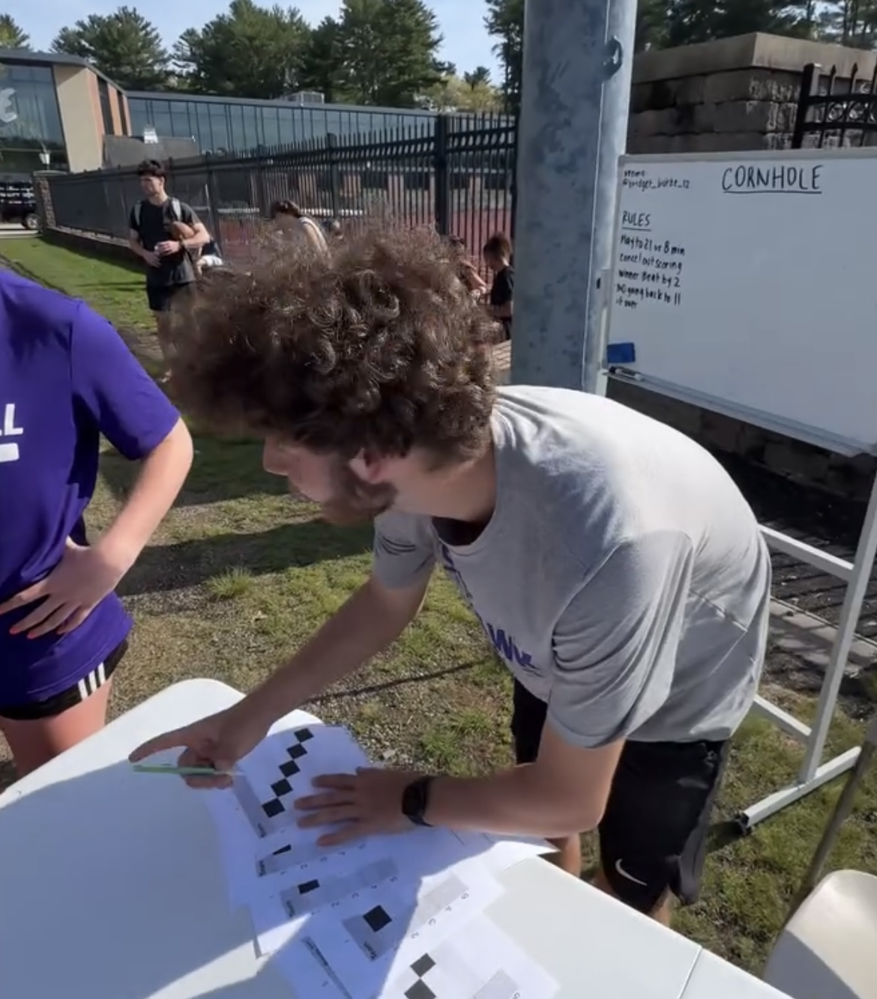
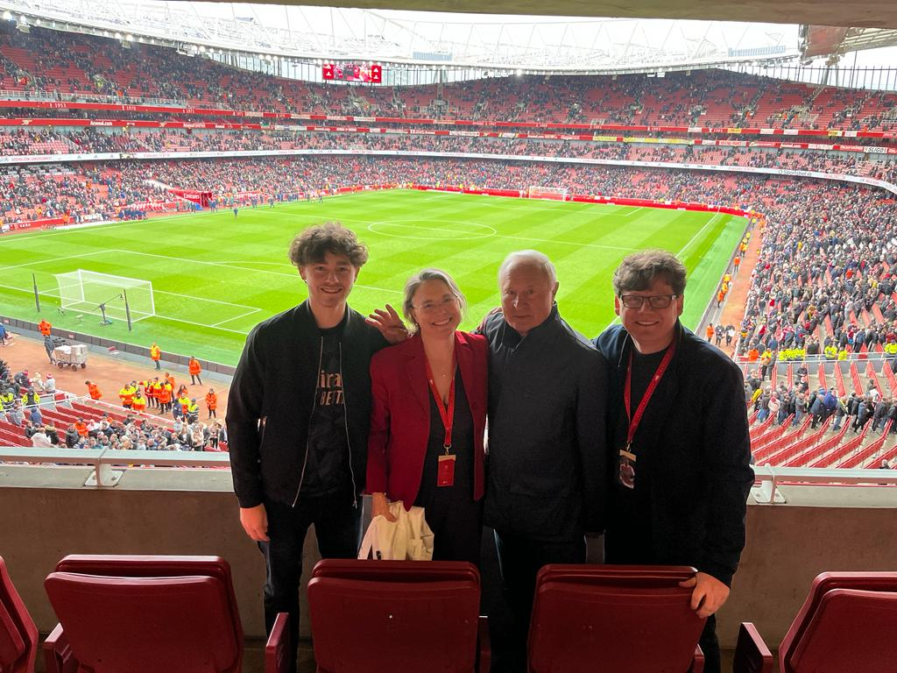
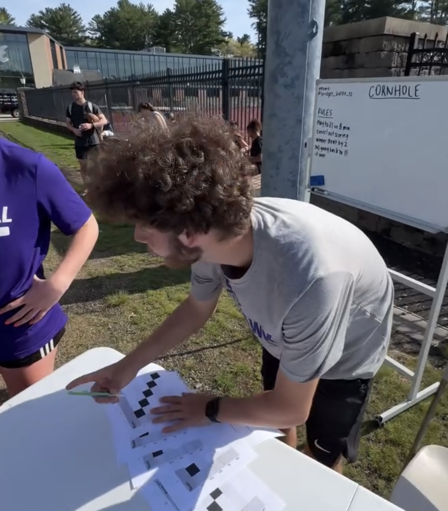
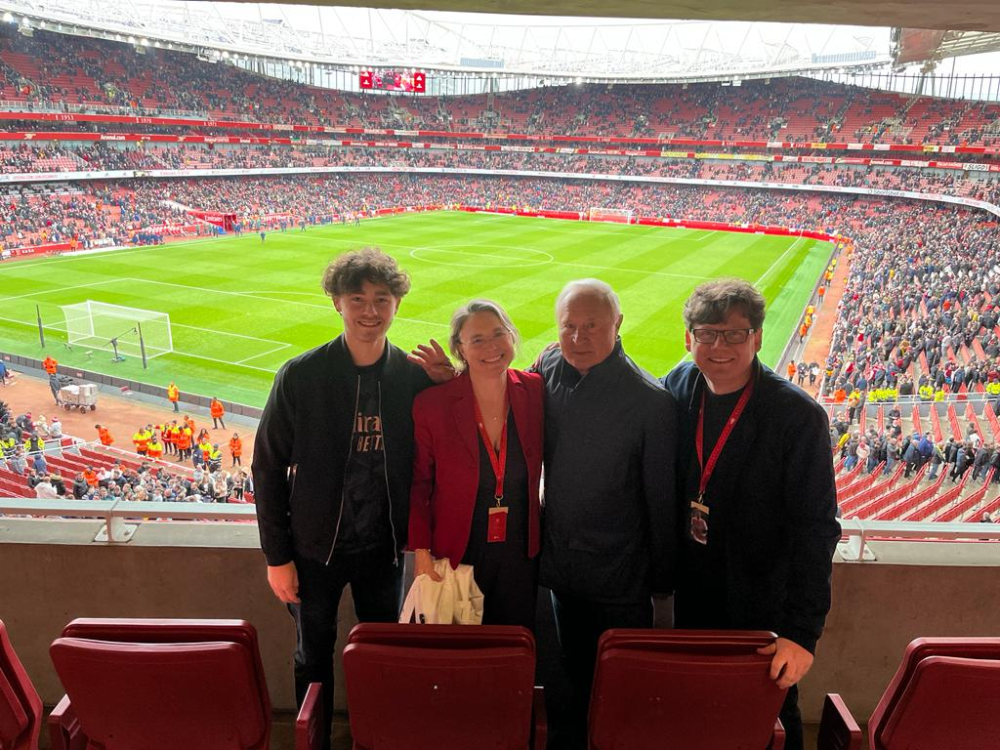

Division 1 Student-Athlete at Stonehill College
Junior Computer Science Major with a Mathematics Minor
Division 1 Student-Athlete at Stonehill College
Junior Computer Science Major with a Mathematics Minor
I’m from Faversham, England, and currently attend Stonehill College in Massachusetts. I’ve been playing tennis for 16 years, and fulfilling my dream of competing at Division 1 level led me to Stonehill. While I’ve always enjoyed math, it wasn’t until my freshman year of college that I discovered a passion for computer science. I’m especially drawn to data science and web development, but I enjoy all forms of problem-solving and am always eager to learn more in the field.
Outside the classroom, I'm a member of Stonehill’s Student-Athlete Advisory Committee (SAAC). I serve as a spokesperson for my teammates, advocating for their needs and contributing to efforts that enhance the student-athlete experience. To take a more active role, I also manage tournament logistics for charity sports events, such as dodgeball, cornhole, and kickball. I coordinate match lengths, formats, and other details to ensure smooth operations and successful fundraising for the Jay Fund. Additionally, I actively participate in meetings of the Association of Computing Machinery (ACM) on campus.
Alongside my competitive tennis experience, I'm a certified Level 1 tennis coach and an official court supervisor; qualifications I regularly put to use at my home club, Canterbury Tennis Club. While tennis has always been my main sport, I’m also a huge football (soccer) fan. No matter how busy I am, I always make time to watch Arsenal play, including preseason friendlies.
 



Stonehill College Digital Innovation Lab | August 2025 - Present
Redesign and optimize an online platform to showcase student work in various media formats, ensuring scalability and ease of maintenance
Collaborate with supervisor weekly to track progress, integrate feedback, and refine project objectives
Stonehill College | September 2024 - Present
Prof. Jane HyoJin Lee: Calculus 1 | Fall 2024, Statistics for Science | Spring 2025, Data Science | Fall 2025
Prof. Sam Goree: Data Structures | Fall 2025
Assisted students in understanding course material
Held review sessions to go through examples and homework questions.
Canterbury Tennis Club | Summer 2025
Collected utilisation data of local clubs regularly, investigated competitor membership options and pricing
Reported results to club manageer and created Plotly visualisations to present findings to executive committee board
Attended in-person meetings at other clubs to gather information
HTML, CSS, JavaScript | July 2025
Employ and experiment with HTML, CSS, and JavaScript to develop website
Conduct routine maintenance and update information
Java | July 2024
Designed and built a fully interactive, retro-style arcade machine in Java, featuring classic games including Snake, Tetris, Pong, and Flappy Bird.
Integrated a secure user authentication system and real-time, dynamically updating leaderboards.
Python | August 2025
Collected information from every deuce game at Australian Open 2025
Conducted comparative analysis using Pandas to evaluate general performance differences between sudden death and traditional deuce format supported with visualisations to highlight key trends
Developed a machine learning model using Decision Trees and Bayesian inference to predict the outcome of service games based on matchups and player styles